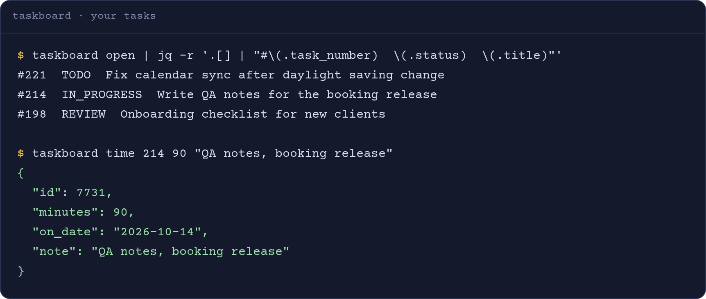
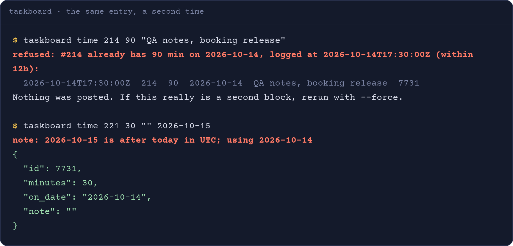

Log 90 minutes by saying so. Once.
taskboard lets Claude Code read and update your tasks on a team's task board and log your time. Every change is shown to you first and sent only after a yes.
1 skill + 1 bash command18 offline testsby Shinzuu
second identical entry within 12h: refused, nothing posted
Nothing changes until you say yes
For every write, Claude shows the exact change, the task and the values, and waits. Reads go straight through.
Log 90 minutes on the booking QA notes.
This is what I will send:
task #214 Write QA notes for the booking release minutes 90 date 2026-10-14 (UTC) note QA notes, booking release
Send it?
Yes.
logged · id 7731
Illustration with invented tasks.
The tool's own output
Run against a stand-in board with invented tasks. These are the real messages the command prints.


What you can ask for
Claude picks the command. You can also run them yourself.
openYour tasks in to do, in progress and review.
readtask NOne task with its comments.
readstatus N STATUSMove a task, for example to review.
changecomment N "text"Comment on a task, with real @mentions.
changetime N MIN ["note"]Log minutes against a task.
changetimer-start N / timer-stopRun the board's timer.
changetimes NTime you logged from this machine, with a total.
read, local
Built for the mistakes people make with timesheets
Each guard is covered by the offline test suite.
No double logging
The same task, minutes and date within 12 hours is refused and nothing is posted. A real second block goes through with an explicit force flag.
No entries on tomorrow
Dates are sent in UTC. If you are ahead of UTC late in the evening, a date that would land on tomorrow is moved back, with a note saying so.
One request, never retried
A time entry is sent exactly once. A retried request could create a second entry, so a failure is reported instead.
Failures stay visible
A failed entry is not written to the local log, and the message tells you to check the task on the board before trying again.
Counted
From the command and its tests.
- 18
- offline tests, no network needed
- 12h
- window in which an identical entry is refused
- 4
- kinds of change, each shown first: status, comment, time, timer
- 0
- retries on a time entry
What setup looks like
No server, no MCP. One bash command and one skill.
- Claude CodeThe skill tells Claude how to use the command and to confirm every write.
- bash, curl, jq and GNU dateStandard on Linux. On macOS, install the GNU date tools first.
- Your own personal key for the boardIt only sees tasks assigned to you. It is stored in a private file and never printed.
- The taskboard folderThe command, the skill and the offline tests.
Source available on request.
Set up with your AI agent
Paste one prompt into Claude Code. It installs the command and the skill, has you store your key without it appearing on screen, and runs the offline tests.
› find the taskboard folder you were given › install the command and the skill › you paste your key, hidden, into a private file › run the 18 offline tests › test: who am I on the board
Questions
Can Claude log time without asking?
The skill tells Claude to show every write in full and wait for your yes. Reads, like listing your open tasks, need no confirmation.
What if I really did two 90-minute blocks today?
Log the second one with the force flag. The guard exists for the accidental repeat, not the real one.
Why does my date sometimes change?
The board rejects dates in the future in UTC. If you are ahead of UTC late in the evening, today's date would already be tomorrow there, so the command sends today's UTC date and tells you.
Does it see other people's tasks?
No. Your personal key only sees tasks assigned to you.